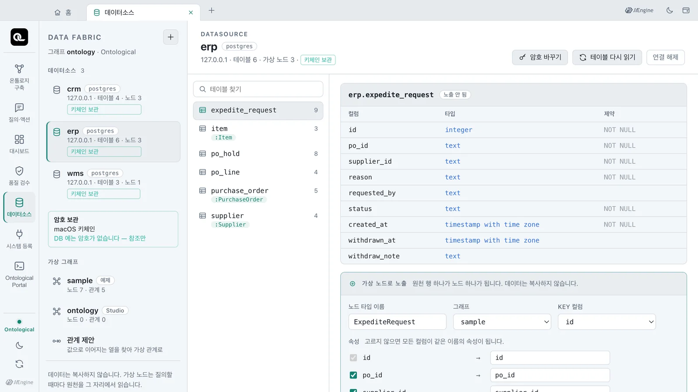
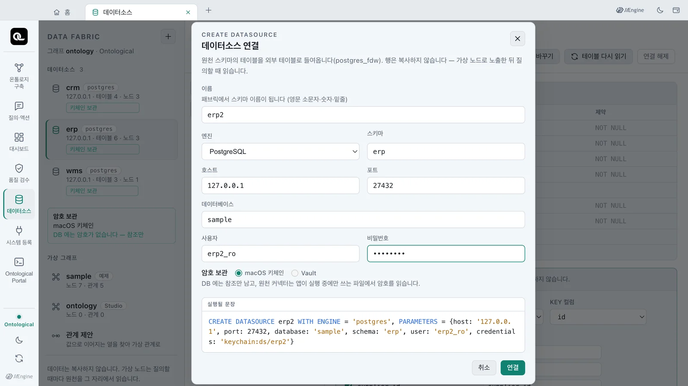
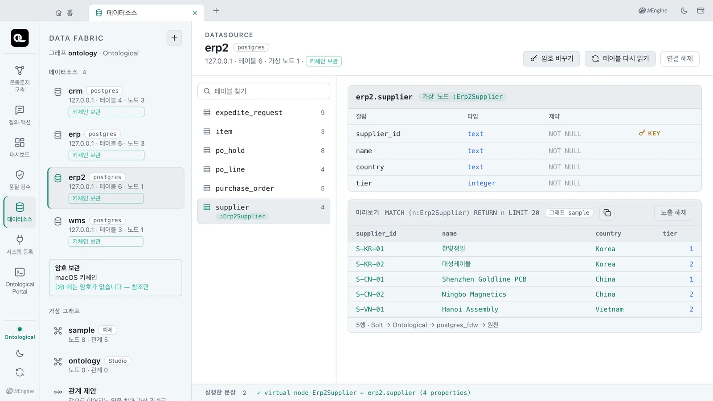
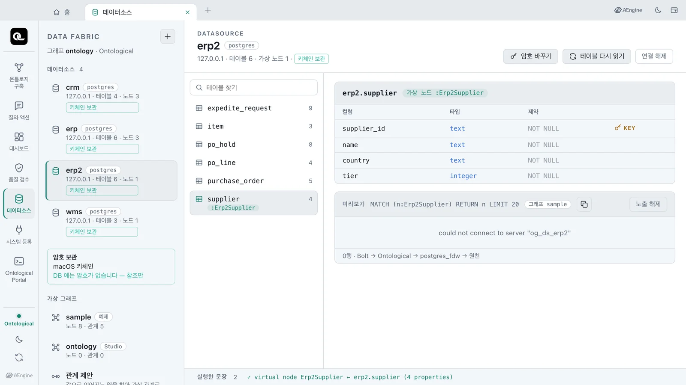
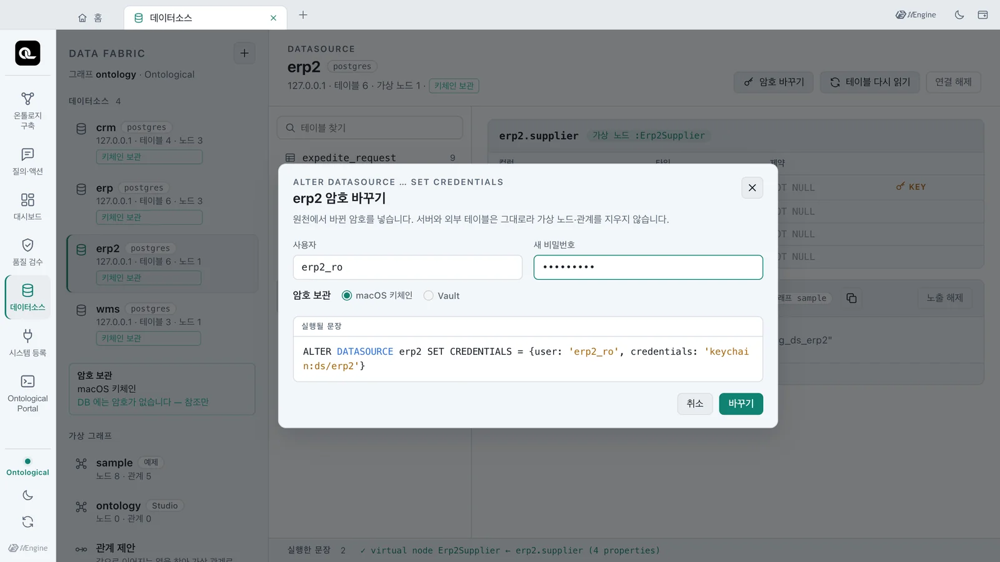
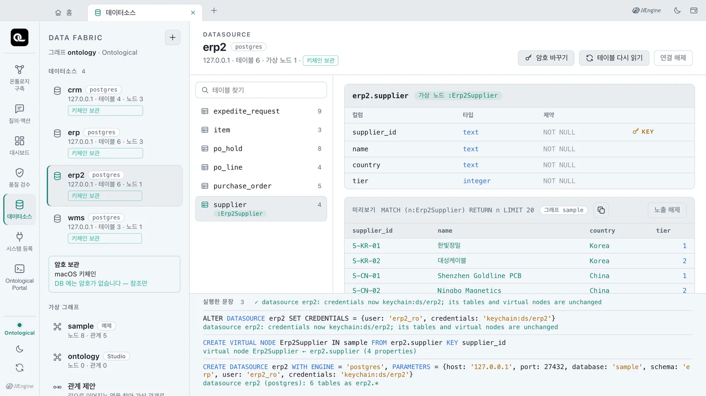
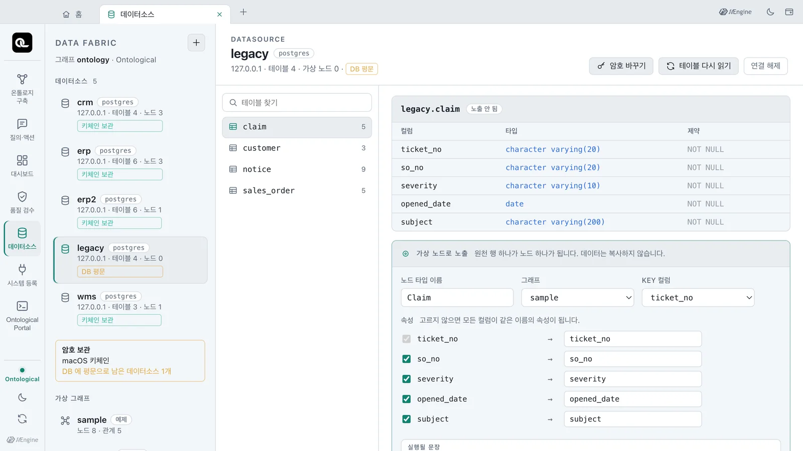
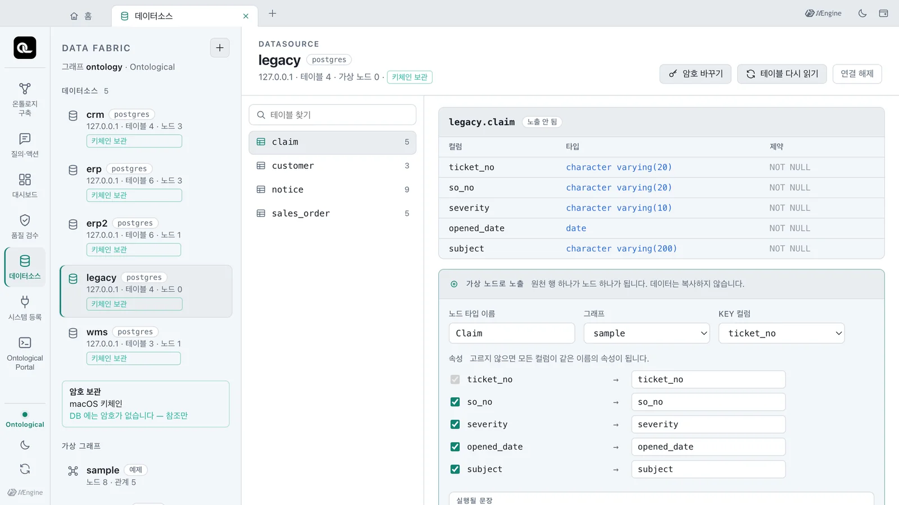

데이터소스의 암호를 데이터베이스가 아니라 OS 키체인(또는 Vault)에 두는 방식을 익힙니다. 보관 배지를 확인하고 새 원천을 키체인 보관으로 연결합니다. 원천 암호가 바뀌었을 때 가상 노드를 지우지 않고 암호만 바꿔 봅니다.
암호는 어디에 있나#
원천 DB에 접속하려면 계정과 암호가 필요합니다. 이 암호를 데이터베이스 안(사용자 매핑)에 그대로 두면, DB 백업이나 로그를 볼 수 있는 사람은 원천 암호도 볼 수 있습니다.
Ontological Studio의 데이터소스는 암호 대신 참조를 가집니다. 암호 자체는 다른 곳에 있습니다.
| 무엇 | 어디에 |
|---|---|
| 데이터소스 정의(호스트·포트·DB·사용자) | Ontological DB |
암호를 가리키는 참조 keychain:ds/erp |
Ontological DB — 암호가 아니라 이름표입니다 |
| 암호 | 앱 데이터 폴더의 보관 파일. OS 키체인(macOS 키체인 · Windows DPAPI)으로 암호화합니다. 회사의 Vault·OpenBao에 둘 수도 있습니다 |
| 원천 커넥터가 읽는 파일 | 앱이 실행 중일 때만 있습니다(소유자만 읽기). 앱을 끄면 지워집니다 |
앱을 켜면 키체인이나 Vault에서 암호를 꺼내 커넥터 파일을 만듭니다. 앱을 끄면 이 파일을 지웁니다. 참조를 읽지 못하면 파일을 만들 수 없어 그 데이터소스만 오류가 납니다. 다른 데이터소스는 그대로 동작합니다.
참고로 NVIDIA Auto Ontology는 Vault를 켜지 않으면 원천 접속 정보를 DB에 평문으로 둡니다. Vault를 읽지 못하면 그 연결이 조용히 사라집니다. 이 앱은 기본으로 참조를 사용하며, 참조를 읽지 못하면 오류를 표시합니다.
따라 하기 — 보관 상태 보기#
- 홈에서 「데이터소스」 카드를 엽니다.
- 왼쪽 데이터소스마다 붙은 배지를 봅니다. 예제
crm·erp·wms에는 모두 「키체인 보관」이 붙어 있습니다. - 목록 아래 「암호 보관」 상자를 봅니다. 「macOS 키체인」과 「DB 에는 암호가 없습니다 — 참조만」이 보이면 정상입니다.

| 배지 | 뜻 |
|---|---|
| 키체인 보관 | DB에는 keychain:ds/<이름> 참조만 있고, 암호는 키체인으로 암호화한 보관 파일에 있습니다 |
| Vault | DB에는 vault:<마운트>/<경로>#<필드> 참조만 있고, 암호는 회사 Vault에 있습니다 |
| DB 평문 | 암호가 DB 사용자 매핑에 그대로 있습니다. 예전 방식이며, 앱을 다시 켜면 키체인으로 옮겨집니다(아래) |
따라 하기 — 새 원천을 키체인 보관으로 연결하기#
연결해 볼 원천(5장의 팁처럼 학교 실습 DB 등)이 있으면 따라 해 보세요. 그림에서는 앱 안의 예제 DB에 읽기 전용 계정 erp2_ro를 따로 만들었습니다. 그 계정으로 erp 스키마를 erp2라는 이름으로 연결했습니다.
- 왼쪽 위 「＋」를 눌러 연결 폼을 엽니다.
- 이름·엔진·스키마·호스트·포트·데이터베이스·사용자·비밀번호를 채웁니다.
- 아래 「암호 보관」에서 「macOS 키체인」을 고릅니다(기본값). 「Vault」는 Vault를 설정했을 때만 고를 수 있습니다.
- 「실행될 문장」을 확인합니다. 비밀번호 대신
credentials: 'keychain:ds/erp2'가 들어 있습니다. - 「연결」을 누릅니다.

실행되는 문장은 다음과 같습니다. 화면에 보이는 문장과 실제로 실행되는 문장이 같습니다.
CREATE DATASOURCE erp2 WITH ENGINE = 'postgres', PARAMETERS = {host: '127.0.0.1', port: 27432,
database: 'sample', schema: 'erp', user: 'erp2_ro', credentials: 'keychain:ds/erp2'}
연결된 erp2에도 「키체인 보관」 배지가 붙습니다. 테이블을 가상 노드로 노출하면 원천을 그대로 읽습니다. 그림은 erp2.supplier를 Erp2Supplier로 노출한 모습입니다(노출하는 방법은 다음 장에서 배웁니다).

따라 하기 — 원천 암호가 바뀌면#
원천 DB 관리자가 계정 암호를 바꾸면, 기존 연결이 끊긴 뒤 다음 질의부터 로그인에 실패합니다. 미리보기에는 could not connect to server "og_ds_erp2"가 나옵니다.

데이터소스를 지우고 다시 만들 필요는 없습니다. 가상 노드가 사용 중인 데이터소스는 연결을 해제할 수 없습니다(5장). 따라서 다시 만들려면 가상 노드부터 지워야 합니다. 「암호 바꾸기」는 서버와 외부 테이블을 그대로 두고 로그인 정보만 바꿉니다.
- 데이터소스
erp2를 고르고 오른쪽 위 「암호 바꾸기」를 누릅니다. - 「새 비밀번호」에 원천에서 바뀐 암호를 넣습니다. 사용자는 그대로 둡니다.
- 「실행될 문장」을 확인하고 「바꾸기」를 누릅니다.
supplier테이블을 다시 눌러 미리보기를 봅니다. 같은 5행이 다시 나옵니다.

ALTER DATASOURCE erp2 SET CREDENTIALS = {user: 'erp2_ro', credentials: 'keychain:ds/erp2'}
화면 아래 「실행한 문장」을 펼치면 엔진의 답 datasource erp2: credentials now keychain:ds/erp2; its tables and virtual nodes are unchanged가 보입니다. 참조 이름은 그대로이며, 키체인에 보관된 암호만 새 암호로 바뀌었습니다.

예전에 만든 데이터소스 — 「DB 평문」#
참조 방식이 생기기 전에 만든 데이터소스는 암호를 DB 사용자 매핑에 보관합니다. 이런 데이터소스에는 노란 「DB 평문」 배지가 붙습니다. 「암호 보관」 상자에는 「DB 에 평문으로 남은 데이터소스 1개」라고 나옵니다. 그림은 시험 삼아 예전 방식으로 만든 데이터소스 legacy입니다.

앱을 다시 켜면 이 암호를 키체인으로 옮깁니다. 사용자 매핑 테이블도 다시 써서 이전 행이 남지 않게 합니다. 배지는 「키체인 보관」으로 바뀝니다. 앱 자체의 비밀값 파일(secrets.json)도 같은 방법으로 키체인에 옮기고 평문 파일은 지웁니다.

옮긴 뒤에는 원천 암호를 한 번 바꾸세요
옮기기 전의 값은 데이터베이스의 WAL이나 백업에 남아 있을 수 있습니다. 암호를 평문으로 보관했던 원천 계정은 암호를 한 번 바꾸고 「암호 바꾸기」로 새 암호를 넣으세요.
Vault·OpenBao를 쓰는 회사라면#
studio.env에 VAULT_ADDR와 AppRole(VAULT_ROLE_ID·VAULT_SECRET_ID) 또는 VAULT_TOKEN을 넣으면, 연결 폼과 「암호 바꾸기」에서 「Vault」를 고를 수 있습니다. 칸에 <마운트>/<경로>#<필드>(예: secret/ontological/erp#password)를 적으면 데이터소스는 vault:secret/ontological/erp#password를 참조로 가집니다.
- Vault의 값은 앱의 보관 파일에 복사하지 않습니다. 앱을 켤 때마다 Vault에서 읽습니다.
- 로그인에 실패하거나 경로·필드가 없으면 「Vault 로그인 실패」 같은 오류로 알립니다.
- Vault 본체는 앱에 들어 있지 않습니다. 회사의 Vault나 OpenBao를 씁니다.
화면 뒤의 문장들#
| 문장 | 하는 일 |
|---|---|
CREATE DATASOURCE … {…, credentials: '…'} |
암호 대신 참조로 연결 |
ALTER DATASOURCE … SET CREDENTIALS |
서버·외부 테이블은 그대로 두고 로그인 정보만 바꿈 |
SHOW DATASOURCES |
credentials 칸에 참조가 보입니다 |
SHOW CREDENTIALS |
앱이 시작할 때 쓸 커넥터 파일 목록(비밀은 없음) |
확인 문제
- 새 데이터소스를 「macOS 키체인」 보관으로 연결하면 Ontological DB에는 무엇이 남고, 암호는 어디에 있나요?
- 원천 관리자가
erp2계정의 암호를 바꿨습니다. 가상 노드Erp2Supplier를 지우고 데이터소스를 다시 만들어야 하나요? - 앱을 끄면 원천 커넥터가 읽던 암호 파일은 어떻게 되나요? 키체인 항목을 잃은 데이터소스는 어떻게 되나요?
정답 보기
- 호스트·사용자 같은 정의와 참조
keychain:ds/<이름>만 남습니다. 암호는 OS 키체인으로 암호화한 앱 데이터 폴더의 보관 파일에 있습니다. 실행될 문장, 사용자 매핑, PostgreSQL 로그 어디에도 암호가 없습니다. - 아니요. 「암호 바꾸기」(
ALTER DATASOURCE erp2 SET CREDENTIALS = …)로 암호만 바꿉니다. 서버와 외부 테이블은 그대로 유지됩니다. 따라서 기존 가상 노드와 관계를 다시 읽을 수 있습니다. - 커넥터 파일 폴더는 지워집니다. 앱을 다시 켜면 키체인에서 암호를 읽어 파일을 다시 만듭니다. 키체인 항목을 잃은 데이터소스는 파일을 만들 수 없습니다. 그래서 그 데이터소스를 읽는 질의만 오류가 납니다. 조용히 사라지지 않고, 다른 데이터소스는 그대로 동작합니다.